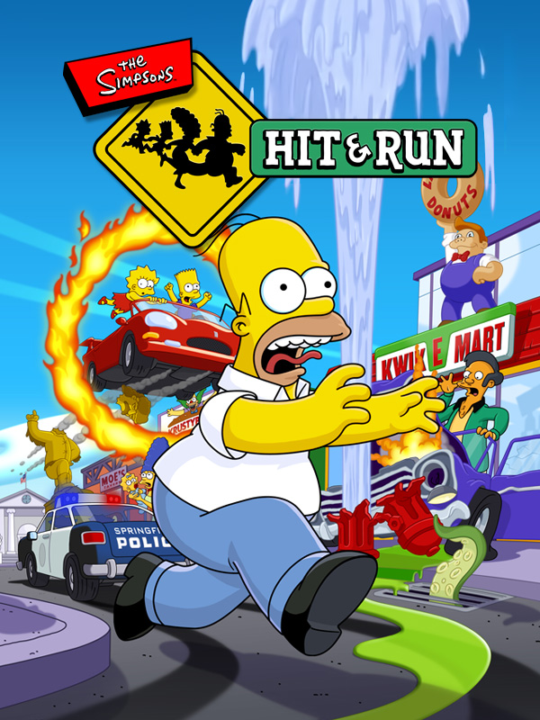

 |
|
| Tiempo de juego | 23m 37s |
| Última actividad | 10/12/2025 13:52:34 |
| Añadido | 23/9/2025 10:41:28 |
| Modificado | 10/12/2025 13:52:16 |
| Estado de finalización | Jugado |
| Librería | Playnite |
| Fuente | |
| Plataforma | PC (Windows) |
| Fecha de lanzamiento | 16/9/2003 |
| Puntuación de la Comunidad | 77 |
| Puntuación de la Crítica | 73 |
| Puntuación de usuario | |
| Género | Adventure Racing |
| Desarrollador | Radical Entertainment |
| Editor | Vivendi Universal Games |
| Característica | Single Player |
| Enlaces | |
| Tag | Voz y Texto en Español |
Durante años, el sueño del pibe era uno solo: un Grand Theft Auto en Springfield. "Hit & Run" cumplió ese sueño en 2003 con una fórmula casi perfecta, capturando la anarquía de la familia amarilla en un mundo abierto que es una carta de amor a la era dorada de la serie.
El juego te suelta en Springfield para que explores a pata o te afanes el Canyonero del vecino para cumplir misiones de conducción alocadas con Homero, Bart, Lisa y Marge. Podés visitar la planta nuclear, el bar de Moe, el Kwik-E-Mart... todo mientras buscás coleccionables y desatás el caos. Es simple, es arcade y es un vicio.
Pero acá es donde el juego nos rompió el corazón a todos en Latinoamérica. A pesar de tener el humor y el alma de la serie, le faltaba lo más importante: nuestras voces. El juego solo vino con el doblaje en español de España, un "Onda Vital" que nos sacaba por completo de la inmersión y del placer de escuchar al Homero de Humberto Vélez.
Y acá es donde entra la magia de la comunidad de PC para arreglar lo que las empresas no hacen por ahorrar guita. Un fanático argentino, Jebano, se cargó al hombro la tarea titánica de redoblar el juego completo al español latino, a pulmón y por puro amor al arte. Busquen su canal de YouTube para ver este laburo increíble, que aunque no esté completo (por eso no lo incluí) demuestra el poder de los fans para completar lo que las tacañas productoras no pudieron hacer.
Aún así, las voces en español son espectaculares y te cagás de risa.
"Hit & Run" es un clásico de culto por un motivo. Es la tormenta perfecta: una idea genial, una jugabilidad divertida y una de las adaptaciones más fieles y respetuosas de una licencia que se han hecho jamás. Es un viaje de ida a la nostalgia, una chance de vivir adentro de la mejor época de la familia amarilla.
• Mod Launcher + Fixes
• ReShade